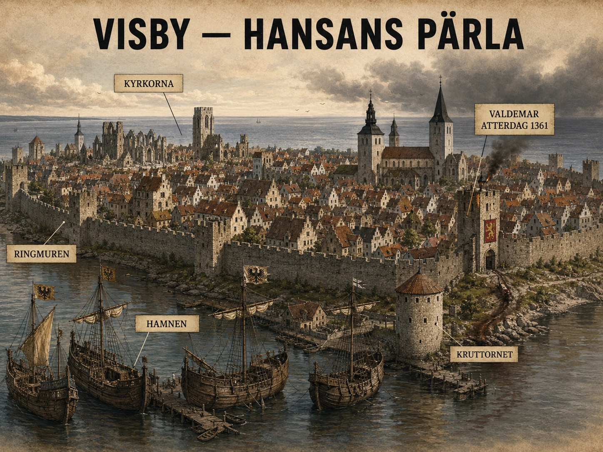

Staden som ser ut som en historiebok
Om man går innanför Visbys ringmur i dag kan det kännas som att staden har fastnat i medeltiden. Smala gator, ruiner, stenhus och den mäktiga muren gör att platsen nästan ser ut som en historiebok man kan gå in i. Men det är lätt att glömma att Visby inte byggdes som museum. Staden byggdes av pengar, handel, konkurrens och rädsla.
En internationell stad i Östersjön
Under 1200-talet var Visby en av Östersjöns mest betydelsefulla handelsstäder. Gotland låg perfekt placerat mitt i havet. Den som kontrollerade handel via Gotland kunde koppla ihop öst och väst, nord och syd. Varor kunde komma från Ryssland, Baltikum, Sverige, Danmark, Tyskland och längre bort. Visby är ett unikt exempel på en nordeuropeisk muromgärdad handelsstad — under 1200-talet utvecklades den från en säsongsbetonad handelsplats till en imponerande metropol.
Visby var alltså inte en liten avlägsen svensk småstad. Under sin storhetstid var den en internationell handelsplats. Tyska köpmän kom dit. Gotländska köpmän hade länge varit aktiva i Östersjöhandeln. Varor lagrades, vägdes, såldes och skeppades vidare. Det fanns stenhus, magasin, kyrkor, gillen och rika borgare. Staden var en del av den värld där Hansan växte fram.
Ringmuren — rikedom och oro
Ringmuren berättar mycket om Visby. En mur är inte bara ett försvar. Den är också ett tecken på rikedom. Fattiga städer bygger inte stora murar. Det kräver pengar, arbetskraft och organisation. Men muren berättar också om oro. Den säger: "Här inne finns något värt att skydda." Visbys välbevarade stadsmur med torn och portar är omkring 3,4 kilometer lång.

Kyrkorna — tro och status
Innanför muren fanns kyrkorna. Visby är känt för sina många kyrkoruiner. I dag ser ruinerna romantiska ut, men under medeltiden var de tecken på konkurrens, rikedom och fromhet. Olika grupper kunde bygga egna kyrkor. Tyska handelsmän, gotländska borgare och olika ordnar satte avtryck i sten. Kyrkorna visade både tro och status. De visade att Visby hade råd.
Ett särskilt viktigt exempel är Sankta Maria, dagens domkyrka. Den började som kyrka för tyska köpmän och blev senare Visbys domkyrka. Det säger mycket om stadens internationella karaktär. Handel och religion låg nära varandra. Köpmän behövde inte bara lagerhus och hamnar. De behövde också kyrkor, nätverk, trygghet och social gemenskap.
Stad mot land
Men Visbys rikedom skapade också konflikter. Staden och landsbygden på Gotland hade olika intressen. De rika borgarna innanför muren levde inte på samma sätt som bönderna utanför. Muren kunde därför också uppfattas som en gräns mellan stad och land, mellan handelsrikedom och jordbruk.
Under 1200-talet ledde spänningarna till konflikter, bland annat inbördeskrig 1288 på Gotland. Stadens ökade avskiljning från landsbygden bidrog till spänningarna. Den mur som skyddade Visbys köpmän mot fiender utifrån var samtidigt en mur mellan dem och de gotländska bönderna.
Sommaren 1361
Sedan kom katastrofen.
Den danske kungen Valdemar Atterdag invaderade Gotland med en professionell och välutrustad armé. Mot honom stod gotländska bönder. Det var en fruktansvärt ojämn kamp. Sommaren 1361 räknas som en av de mest tragiska perioderna i Gotlands historia — tusentals gotländska bönder föll i strider mot Valdemars armé. Slaget vid Visby ringmur var ovanligt blodigt, och massgravarna vid Korsbetningen utanför staden vittnar än i dag om kraftiga skador från striden. När arkeologer öppnade dem på 1900-talet låg de döda kvar i sina ringbrynjor, eftersom det varit för varmt och för många kroppar för att hinna avlägsna utrustningen.
Här blir Visbys historia nästan brutal i sin symbolik. Bönderna kämpade utanför muren. Staden låg innanför. Enligt traditionen släpptes de inte in. Exakt hur allt gick till diskuteras, men bilden är stark: landsbygdens människor försvarade Gotland och krossades utanför den rika handelsstadens murar.
Silverbrunnen — historia eller legend?
Efter segern tvingade Valdemar staden att betala. Här föds den berömda berättelsen om silverbrunnen eller silverskatten: att Visbys borgare skulle ha fyllt stora kärl med silver för att rädda staden från att brännas. En av den svenska konsthistoriens mest berömda målningar — Carl Gustaf Hellqvists "Valdemar Atterdag brandskattar Visby" från 1882 — bygger på berättelsen att Valdemar gav Visbys borgare ultimatumet att fylla tunnor med silver eller se staden brinna.
Det är viktigt att förstå skillnaden mellan historia och legend. Vi vet att Valdemar erövrade Gotland och att Visby tvingades betala. Men detaljerna om tunnorna, dramatiken och hur silvret samlades in har blivit en berättelse som senare generationer har målat, återberättat och förstorat. Legenden är inte värdelös. Den visar hur människor minns historien. Men den är inte samma sak som ett exakt protokoll från 1361.
Den långsamma tystnaden
Efter 1361 försvann inte Visby direkt. Staden fortsatte att finnas. Men dess ledande roll försvagades. Under 1300-talet började Visby förlora sin position i Hansan — pesten omkring 1350 hade redan slagit hårt, den danska invasionen 1361 förstörde mycket, och senare krig, piratverksamhet och förändrade handelsrutter försvagade Gotlands handel ytterligare.
Det är här titeln "den rika handelsstaden som sjönk i tystnad" passar. Visby gick från att vara en central handelsmetropol till att bli mer av en stad vid sidan av de stora handelsströmmarna.
Paradoxen — tystnaden bevarade staden
Ironiskt nog är det en av orsakerna till att så mycket av det medeltida Visby finns kvar. Städer som fortsätter växa kraftigt river ofta gammalt och bygger nytt. Visby blev fattigare och mindre centralt. Därför blev mycket stående: muren, ruinerna, gatunätet, stenhusen.
När du går genom Visby i dag och tycker att det är så vackert bevarat — då ska du veta att skönheten är en konsekvens av tystnaden. Hade staden förblivit rik hade muren förmodligen rivits för länge sedan för att göra plats för nya kvarter.
Vad Visby visar svenska elever
Visby är därför en fantastisk plats att tänka med. Den visar att Sverige och Östersjön inte låg utanför Europas historia. Gotland var en del av ett internationellt handelsnätverk. Tyska, danska, ryska, svenska och gotländska intressen möttes där. Visby visar också att handel kan skapa rikedom — men också ojämlikhet, konflikter och sårbarhet.
När du tänker på Visby ska du alltså inte bara tänka på rosor och ruiner. Tänk på en stad där världsekonomi, Hansan, krig, klasskillnader och minne möts på samma plats.
Visby är inte bara en vacker medeltidsstad. Det är ett historiskt bevis på att handel kan få en stad att resa sig — och att förändrade handelsvägar, krig och maktpolitik kan få samma stad att långsamt tystna.